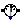
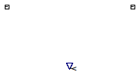

Table of Contents
- User's Guide
- BCs
- Sensors
- Assemblies
- Regions
- Subregions
- Connectors
- Characteristics
- Units
- Quantities
- BaseClasses
Download
- Latest: FCSys-2.0.zip (**Please check back soon or contact kdavies4 at gmail.com.)

| Name | Description |
|---|---|
| Density | Sensor for density difference (closed condition) |
|  Current | Sensor for current (isochoric condition) |
| Base classes (not for direct use) |

| Type | Name | Default | Description |
|---|---|---|---|
| SensorType | sensorType | BaseClasses.SensorType.Density | Type of sensor |
| Type | Name | Description |
|---|---|---|
| Material | negative | Material connector for the negative face |
| Material | positive | Material connector for the positive face |
model Density "Sensor for density difference (closed condition)" extends BaseClasses.PartialSensor(final sensorType=BaseClasses.SensorType.Density, redeclare FCSys.Connectors.RealOutput y(final unit="N/l3")); equation y = negative.rho - positive.rho "Measurement"; 0 = negative.Ndot "Condition of no current"; // Note: In conjunction with the material conservation equation, this // means that there's no current into either face.end Density;
| Type | Name | Default | Description |
|---|---|---|---|
| SensorType | sensorType | BaseClasses.SensorType.Current | Type of sensor |
| Type | Name | Description |
|---|---|---|
| Material | negative | Material connector for the negative face |
| Material | positive | Material connector for the positive face |
model Current "Sensor for current (isochoric condition)" extends BaseClasses.PartialSensor(final sensorType=BaseClasses.SensorType.Current, redeclare FCSys.Connectors.RealOutput y(final unit="N/T")); equation y = negative.Ndot "Measurement"; negative.rho = positive.rho "Condition of equal electrochemical potentials";end Current;